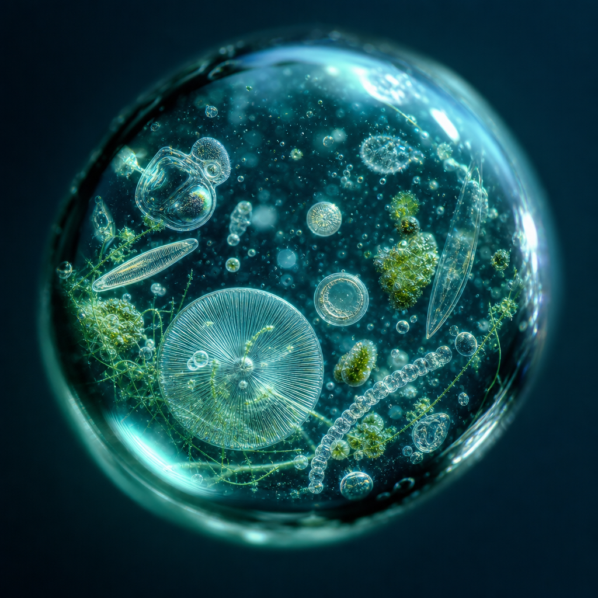
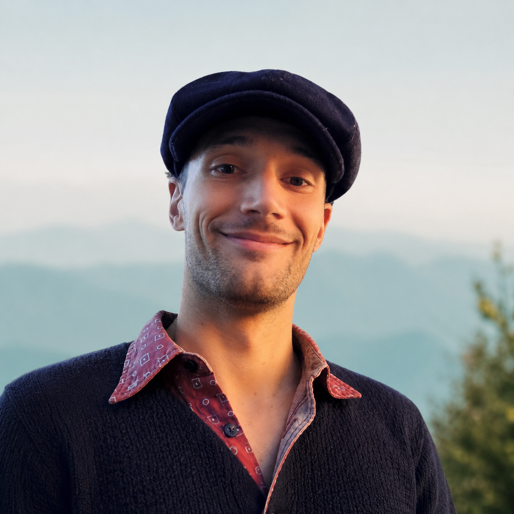

Genomic literacy for everyone
Reading DNA shouldn't be locked inside university labs. We put frontier tools into the hands of students, wherever they learn and whatever their starting point.
Mission & Vision
Every living organism carries a genome. Together they form the World Genome, the collective genetic record of life on Earth. We help the next generation read it, and generate the data that helps protect it, before it disappears.
Our Mission
Biodiversity is Earth's greatest library. Every species carries unique genetic information shaped over millions of years, and as species disappear, we lose chapters that may never be read.
World Genome Academy empowers students to read this library through environmental DNA. They don't just learn genomics, they generate real biodiversity data that supports scientific research and conservation, turning curious learners into credible scientists.
Partner with us
What drives us
Everything we build comes back to a simple belief: understanding the living world is the first step to protecting it, and that understanding belongs to everyone.
Reading DNA shouldn't be locked inside university labs. We put frontier tools into the hands of students, wherever they learn and whatever their starting point.
Student samples become real data. Every classroom contributes to genuine biodiversity research and conservation, not simulations or busy-work.
You defend what you know. By helping young people read the living world firsthand, we empower lifelong biodiversity stewards.
Our Vision
We are building a future where a student anywhere on Earth can sample a river, sequence its DNA, and add a new page to the global record of life, before that page is lost. A future where genomic literacy is as fundamental as reading a map, and conservation begins in the classroom.
Portable sequencing turns the rivers, forests, and shorelines outside any school into living laboratories.
A growing, open record of life on Earth, built page by page by students and trusted by researchers everywhere.
A generation fluent in the language of life, equipped and motivated to protect the biodiversity around them.
Who we are
Co-Founder
Combines expertise in environmental policy, biodiversity finance, and science communication to build educational experiences that inspire the next generation of biodiversity stewards.

Co-Founder
As a bioinformatician and data scientist, Stanley develops the computational tools and genomic workflows that transform environmental DNA into robust biodiversity data and scientific insights.
Scientific Outreach
Biologist, university lecturer and author with a PhD in plant ecology, he combines decades of scientific expertise with a talent for making complex ecological concepts accessible to the public.
Our promise
Every river holds DNA. Every forest tells a story. Every student can help read it.
Biodiversity is disappearing faster than we can read it. Every classroom that joins helps preserve the genetic record of life for generations to come.